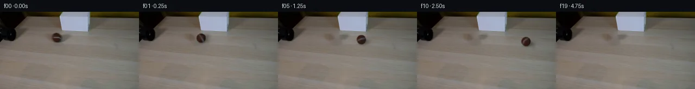

![首帧]()

Round 00
2026-11-05T16:31:27.320745+00:00像素候选变化代码 +187/−0inspection 更新
pixels e58370d75ca5a2d8 · code ffea5251580c7355
查看本轮 generate.py 真实 diff
--- previous/generate.py
+++ current/generate.py
@@ -0,0 +1,187 @@
+"""Local photographic reconstruction and analytic rolling-sphere continuation.
+No models, outside resources, render engines, or output image viewing.
+"""
+from pathlib import Path
+import json
+import numpy as np
+import cv2
+from PIL import Image, ImageDraw
+from scipy.ndimage import map_coordinates, gaussian_filter
+from artifact_io import save
+
+ROOT=Path(__file__).resolve().parent
+SOURCE=np.array(Image.open(ROOT/'first_frame.png').convert('RGB'))
+H,W=SOURCE.shape[:2]
+CX,CY,R=104.0,47.7,8.5
+Y,X=np.mgrid[:H,:W]
+
+# Only the photographed ball and its small cast shadow are reconstructed.
+ball_hole=((X-CX)/10.2)**2+((Y-CY)/10.1)**2<1
+shadow_hole=((X-110.0)/16.0)**2+((Y-52.0)/9.0)**2<1
+hole=(ball_hole|shadow_hole)&(Y>=38)
+# Navier-Stokes image inpainting continues the surrounding table gradients.
+# Add subtle wood texture from a nearby clean strip, with a feathered boundary.
+clean=cv2.inpaint(SOURCE,hole.astype(np.uint8)*255,4,cv2.INPAINT_NS).astype(float)
+donor=np.roll(SOURCE.astype(float),32,axis=1)
+detail=donor-gaussian_filter(donor,sigma=(1.15,2.8,0))
+inside=cv2.distanceTransform(hole.astype(np.uint8),cv2.DIST_L2,5)
+clean+=detail*np.clip(inside/4,0,1)[...,None]*0.5
+clean=np.clip(np.rint(clean),0,255).astype(np.uint8)
+clean[~hole]=SOURCE[~hole]
+
+# Fit a stationary diffuse response to the observed dark brown parts of the ball.
+nx=(X-CX)/R; ny=-(Y-CY)/R
+nz=np.sqrt(np.maximum(0,1-nx*nx-ny*ny))
+features=np.stack([np.ones_like(nx),nx,ny,nz],-1)
+brown=(nx*nx+ny*ny<0.7**2)&(SOURCE[:,:,0]<76)&(SOURCE[:,:,2]<37)
+coeff=np.linalg.lstsq(features[brown],SOURCE[brown].astype(float),rcond=None)[0]
+def diffuse(normals):
+ b=np.concatenate([np.ones(normals.shape[:-1]+(1,)),normals],axis=-1)@coeff
+ return np.maximum(b,[31.,17.,11.])
+
+# Ground normal in camera coordinates (x right, y up, z towards camera).
+# With a 25 degree table view, screen motion of +.075 y per x determines
+# the depth component. Rolling axis is ground_normal cross travel_direction.
+elevation=np.deg2rad(25)
+ground=np.array([0.,np.cos(elevation),np.sin(elevation)])
+travel=np.array([1.,-.075,.075/np.tan(elevation)])
+travel/=np.linalg.norm(travel)
+axis=np.cross(ground,travel);axis/=np.linalg.norm(axis)
+K=np.array([[0,-axis[2],axis[1]],[axis[2],0,-axis[0]],[-axis[1],axis[0],0]])
+
+def rotation(theta):
+ return np.eye(3)+np.sin(theta)*K+(1-np.cos(theta))*(K@K)
+
+def sphere_color(normals,theta):
+ # Inverse rotation into material coordinates, followed by reprojection
+ # into the input photograph wherever that hemisphere was observed.
+ body=normals@rotation(theta)
+ sx=CX+R*body[...,0];sy=CY-R*body[...,1]
+ sample=np.stack([map_coordinates(SOURCE[:,:,c].astype(float),[sy,sx],order=1,mode='nearest') for c in range(3)],-1)
+ source_residual=sample-diffuse(body)
+ # The hidden hemisphere must be completed. Continue the photographed pale
+ # stripe around the sphere and add low-amplitude deterministic felt grain.
+ latitude=body[...,1]+.025
+ stripe=np.exp(-.5*(latitude/.078)**2)
+ fiber=(np.sin(57*body[...,0]+19*body[...,2])*np.sin(43*body[...,1]-11*body[...,0])
+ +.45*np.sin(99*body[...,2]+32*body[...,1]))
+ unseen=stripe[...,None]*np.array([43.,55.,70.])+fiber[...,None]*np.array([1.2,.9,.6])
+ f=np.clip((body[...,2]-.40)/.28,0,1)
+ f=f*f*(3-2*f)
+ residual=unseen*(1-f[...,None])+source_residual*f[...,None]
+ # Soft diffuse response stays attached to the fixed scene lighting.
+ return np.clip(diffuse(normals)+residual,0,255)
+
+def trajectory(t):
+ d=40*t-.6*t*t
+ return CX+d,CY+.075*d,d
+
+def render(t):
+ cx,cy,d=trajectory(t)
+ # Local crop covers the sphere, blur, and its entire shadow; all other
+ # photograph pixels remain unchanged. Smooth shadow is cut below 1/255.
+ x0=max(0,int(np.floor(cx-19)));x1=min(W,int(np.ceil(cx+29)))
+ y0=max(38,int(np.floor(cy-12)));y1=min(H,int(np.ceil(cy+19)))
+ out=clean.astype(float)
+ if x1<=x0 or y1<=y0:return out
+ yy,xx=np.mgrid[y0:y1,x0:x1]
… diff truncated; 100 more lines …